西工大网络空间实战攻防能力训练（Actual Combat Ability Training of Cybersecurity Offense-defense Confrontation）系列实验
虚拟机和 VMware tools
安装
在 Win7 中安装 VMware tools：
参考 Vmware 16 安装 Windows7 后安装 VMware tools 选项为灰色及无法安装的解决方法
在创建完虚拟机之后，关机，进行如下设置：
- 软盘改成自动检测。
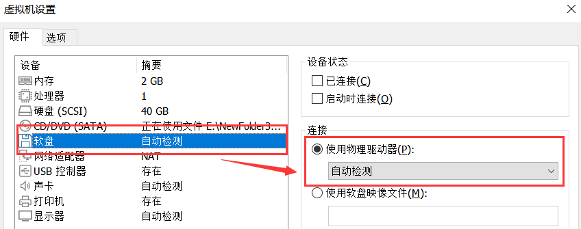
- 选用的 ISO 映像文件为下载下来的带补丁的文件
kb4474419......。
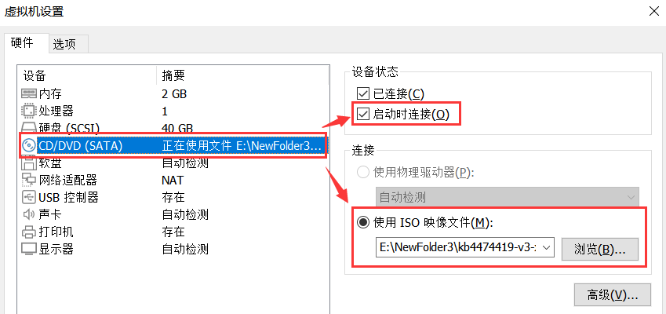
如果重启之后还是无法打开下面提到的 DVD 驱动器，请勾选上图中“设备状态”里的“已连接”。
在虚拟机的 DVD 驱动器里安装补丁：
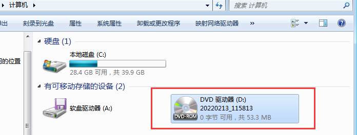
再在 VM 中按照下面左图安装，耐心等待一段时间之后，桌面上会出现右图界面，点击红框中的选项运行即可：
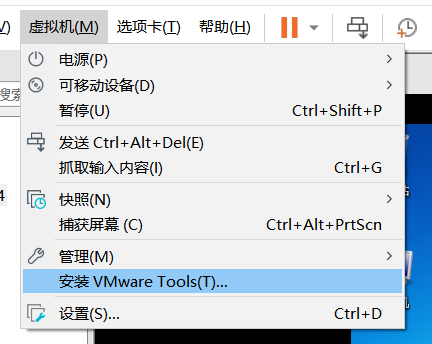
→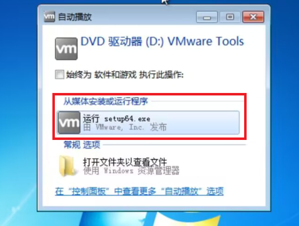
XP 激活密钥：RXHQ2-6447R-RQCWC-3QGRM-KW7KC
在 Win XP 中安装 VMware tools 也许好像就没这么多事了，虚拟机安装完成后似乎是可以自动安装的。反正我这里是这样的。
关闭防护手段
-
关闭防火墙
-
在防火墙的页面左侧打开“高级设置”：
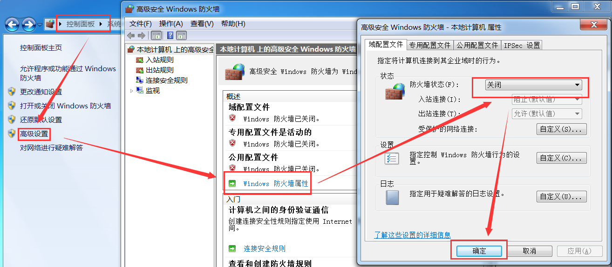
-
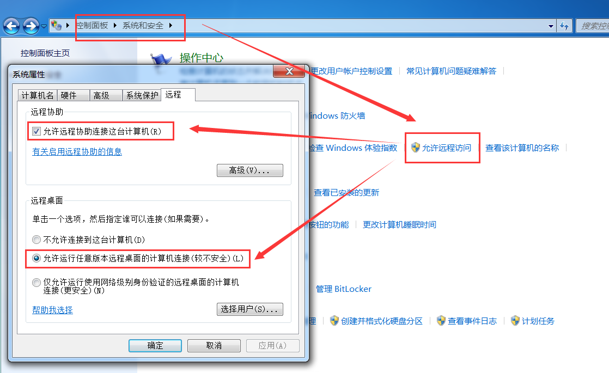
-
注意这一项会导致 VMware Tools 无法使用！请及时拍摄快照！
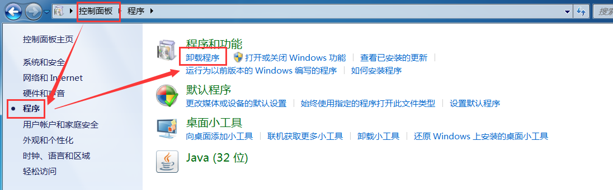
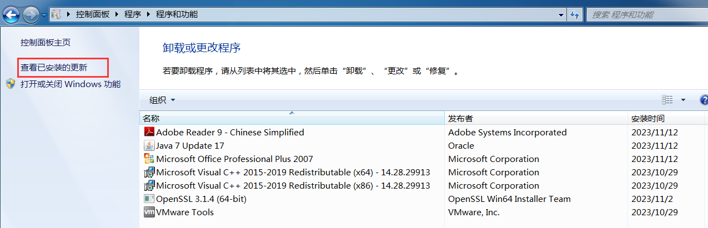
对所有更新，右键点击卸载，卸载完毕后会重启：

Maltego
注册 Maltego
注册账号的地址： Register for a Maltego CE Account
组织信息、手机号等都可以随便填写。
最后的人机身份验证需要科学上网，如不能科学上网请参考：Maltego 注册问题详解、Redirector
最后在注册使用的邮箱里进行账号激活。
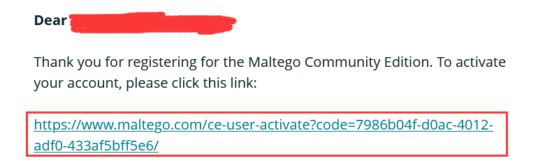
安装 Maltego
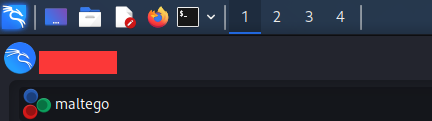
Kali 自带 Maltego 安装包，点击 Kali 界面左上角“应用程序”，搜索maltego，会显示有 maltego(installer)（如果没有 installer 说明已经安装好了，如右图)。打开即可安装。
可以在 官网 可以下载 Maltego 安装包。镜像站下载网址：MSDN, 我告诉你 - 做一个安静的工具站
配置 Maltego
第一次打开 Maltego，会显示产品选择界面，选择 Maltego CE(Free)，单击下面的 Run 按钮。
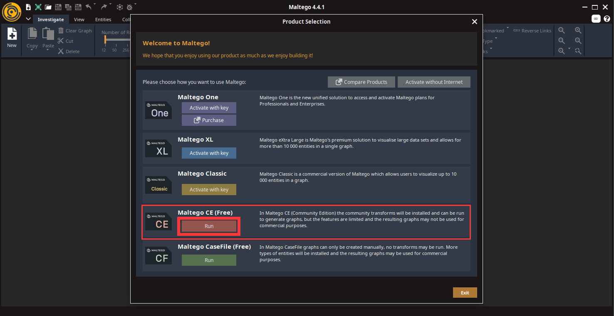
等待一会，在弹出的窗口中按流程执行：1.同意协议、2.使用邮箱登录、3.显示登录结果、4.显示安装 Transform 界面、5.选择是否启用自动发送错误报告功能（不启用则直接点 Next）。
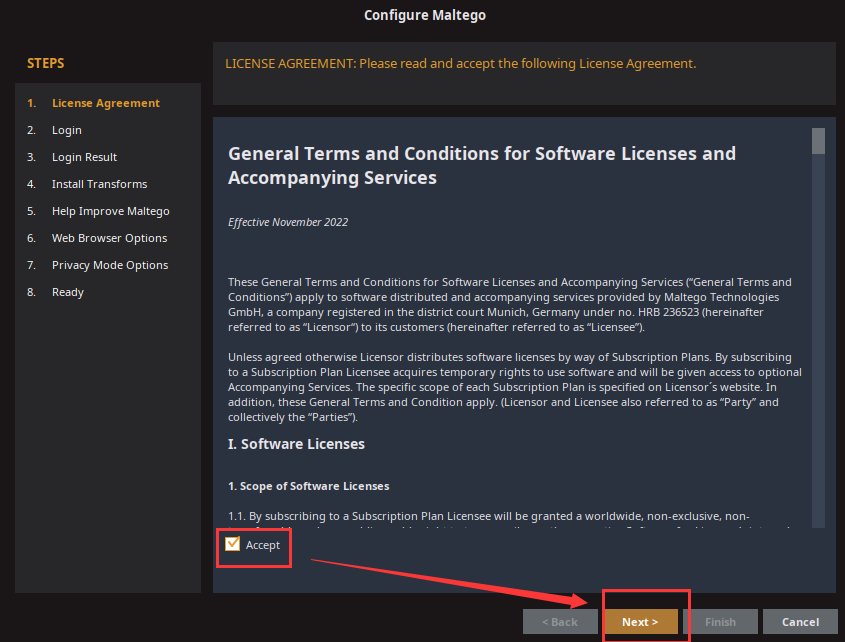
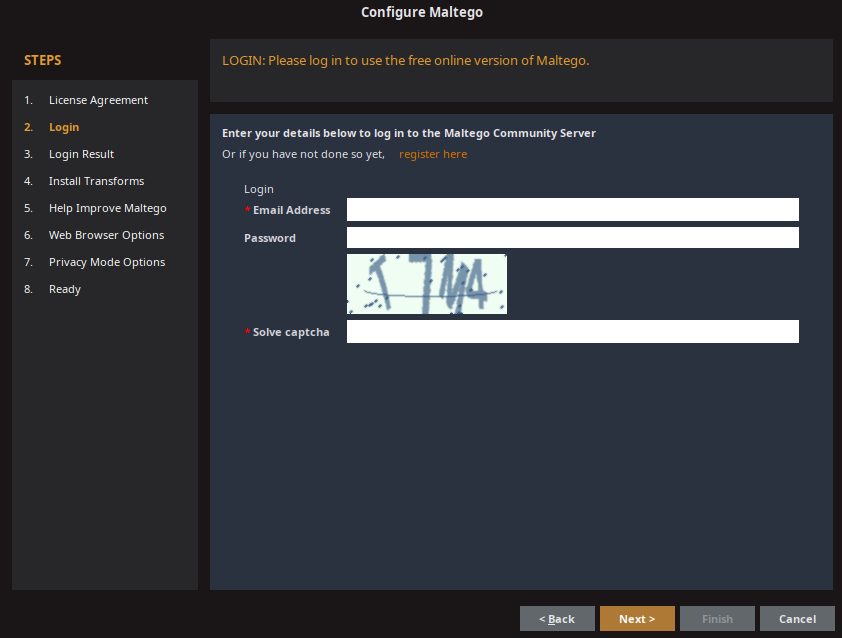
6.网络浏览器选项，设置为 Firefox 即可。
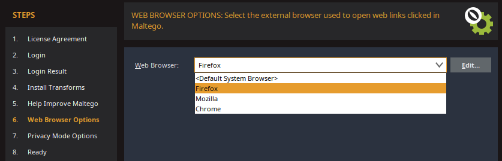
7.设置 Maltego 的模式为 Normal Privacy Mode。
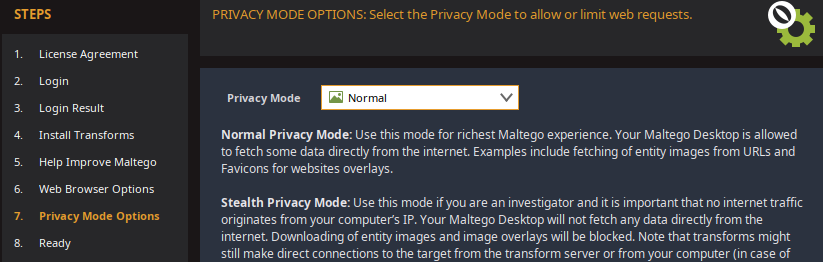
下一步可以选择 Open a blank graph and let me play around（打开一个空白的图）。这样就配置成功了。
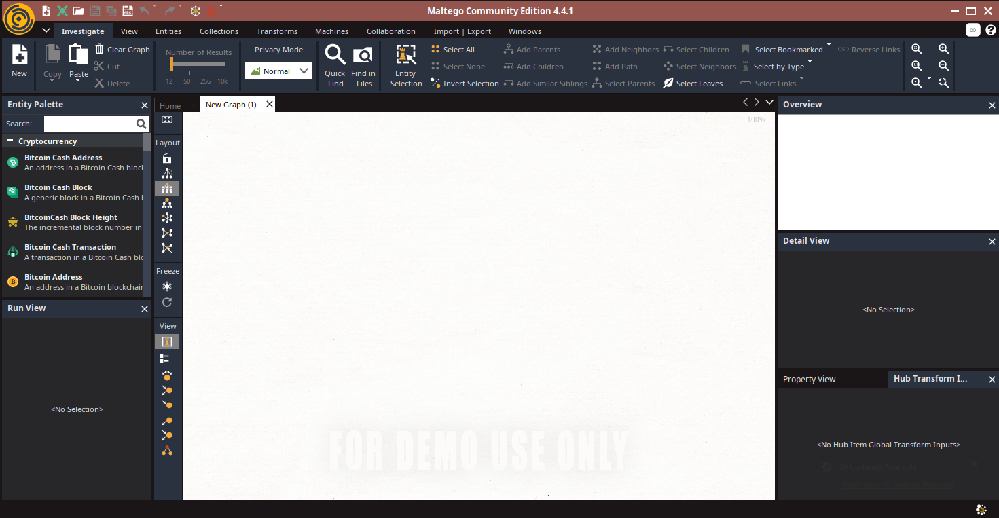
Nessus
笔者有一回安装时，同一个安装包中，居然没有 Nessus Essentials 选项，没办法，只好选了 Managed Scanner，结果并没有安装成功。第二次安装时，Nessus Essentials 选项才莫名其妙出现，于是就有了这么一个尴尬的情形，先写了 Managed Scanner 选项的失败教程，然后才能写 Nessus Essentials 的教程。虽然 Nessus Essentials 安装得更成功，但是重复的地方又太多。故而 这里的整个安装教程以 Managed Scanner 模式为主干，而与 Nessus Essentials 不同的地方则会在后面单独讲解。
详细地说，1、2、3 小节均是针对于 Managed Scanner 模式，而第 4 小节主要讲解 Nessus Essentials 安装操作中需要调整的地方。一般而言，选择 Nessus Essentials 模式安装即可。
安装与初始化
从 官网 或其他地方获取 deb 格式安装包，在安装包所在目录打开终端。
在 root 下使用下面的命令安装：
1 | dpkg -i Nessus-10.6.1-debian10_amd64.deb |
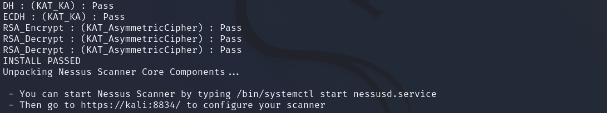
开启服务：
1 | /bin/systemctl start nessusd.service |
打开上图中“Then go to”后面的网址 https://kali:8834/，在火狐中选择“接受风险并继续”：
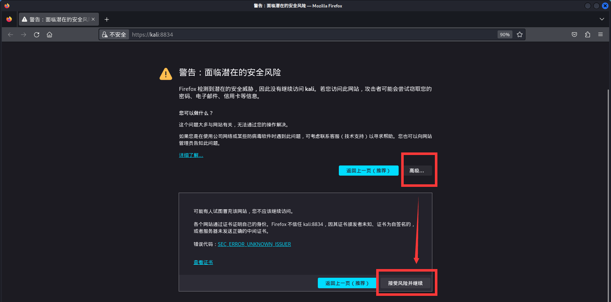
极其不建议使用在线安装，因为可能会出于网络不稳定而导致插件下载失败，从而无法使用。
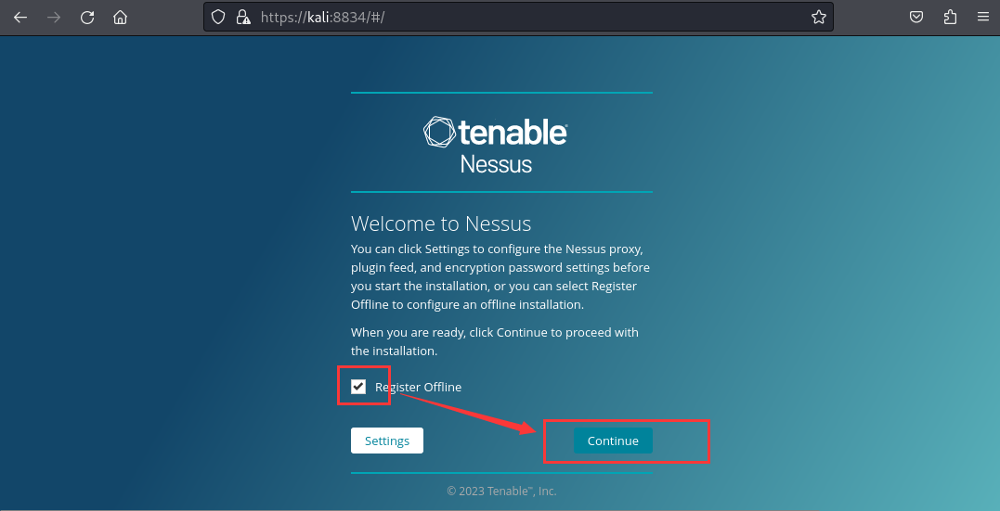
接下来按下图从左到右执行： 查看 Nessus Essentials 模式下的做法
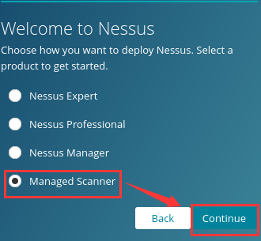
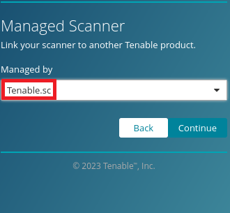
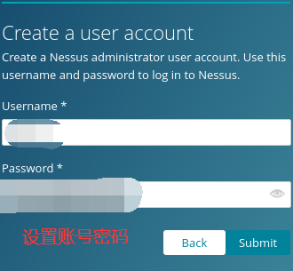
之后等待初始化，初始化结束进入界面，此时没有安装插件，无法使用：
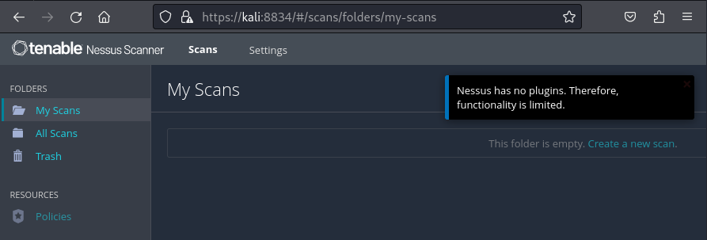
注册，获取插件和证书
在 https://www.tenable.com/products/nessus/nessus-essentials 中注册获取激活码（同一邮箱可以多次注册，1 小时内只能注册一次）：
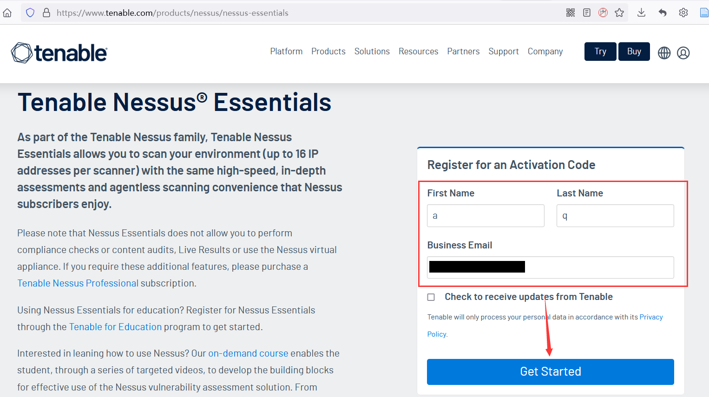
点击“Get Started”，正常会跳转至如下界面：
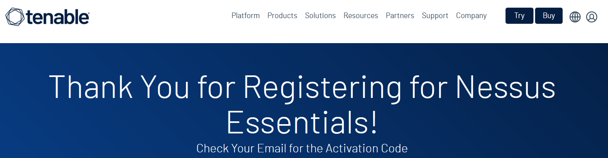
等个一分钟，去邮箱查看，获取 activation code：
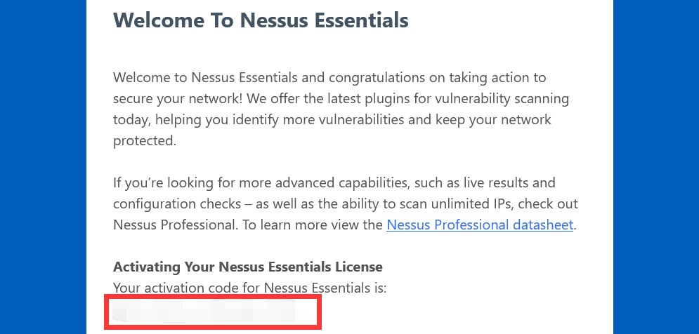
获取 challenge code：
1 | /opt/nessus/sbin/nessuscli fetch --challenge |
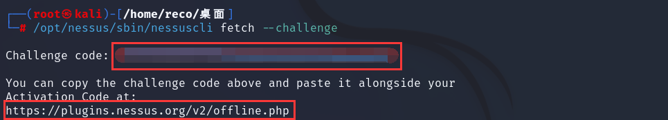
打开上图网址 https://plugins.nessus.org/v2/offline.php，填入激活码和挑战码（别填反了，不过填反了重填就行）：
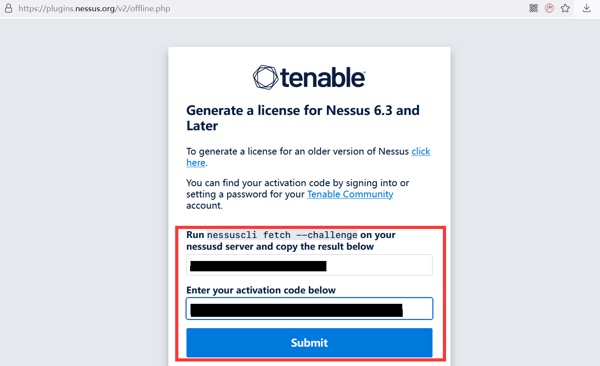
Submit 之后，新的页面中有如下链接（页面最上面）和按钮（最下面），点击下载插件和证书：
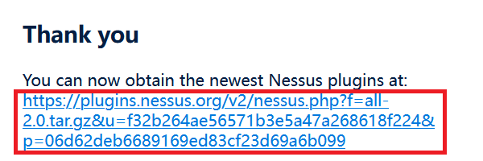
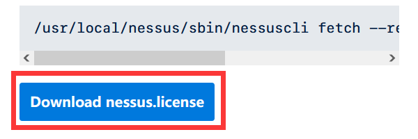
查看上面这一步在 Nessus Essentials 模式下的做法：传送门
安装插件与证书
将插件和证书这两个文件复制到 /opt/nessus/sbin/ 目录下：（保留插件文件，破解用）
1 | cp nessus.license /opt/nessus/sbin/ |
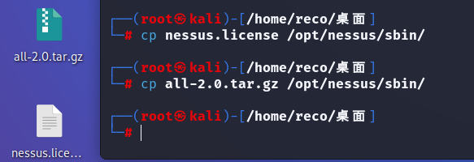
进入 /opt/nessus/sbin/ 目录：cd /opt/nessus/sbin/
注册并安装插件：
1 | ./nessuscli fetch --register-offline nessus.license |
上面两步可以合并为下面两条命令：
1 | /opt/nessus/sbin/nessuscli fetch --register-offline nessus.license |
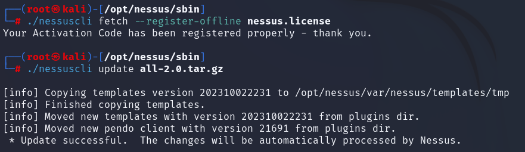
重新启动服务：
1 | systemctl restart nessusd.service |
1 | systemctl stop nessusd.service # 这样也行 |
打开 https://kali:8834/ 网址，等待插件编译（约 15 分钟左右）完成即可使用：
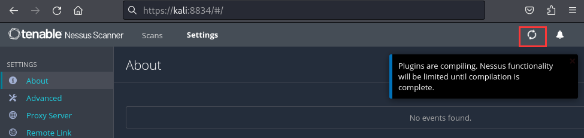
请注意，插件编译过程中无法使用，参考 Nessus已激活，New Scan按钮不可点击。
Nessus Essentials 模式
在 选择离线安装之后的步骤 中，如果有“Nessus Essentials”选项，就选它（下图左一）：
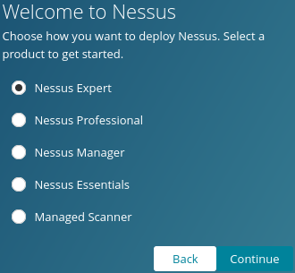
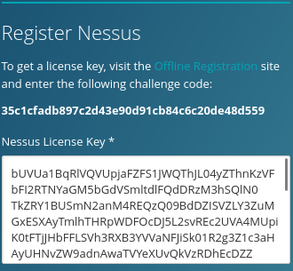
继续来到上图左二，这里和 注册，获取插件和证书 的绝大部分步骤一致，也就是提前完成了这一部分，唯一的区别在于“注册，获取插件和证书”这个小标题下的 最后一步。
获取证书的网站都是同一个：https://plugins.nessus.org/v2/offline.php
Managed Scanner 模式的证书是下载下来再安装的，而这里提前要求提供认证，只需要把下图中的证书内容复制到文本框里就可以了。当然这里也应该顺手把插件下载好了。
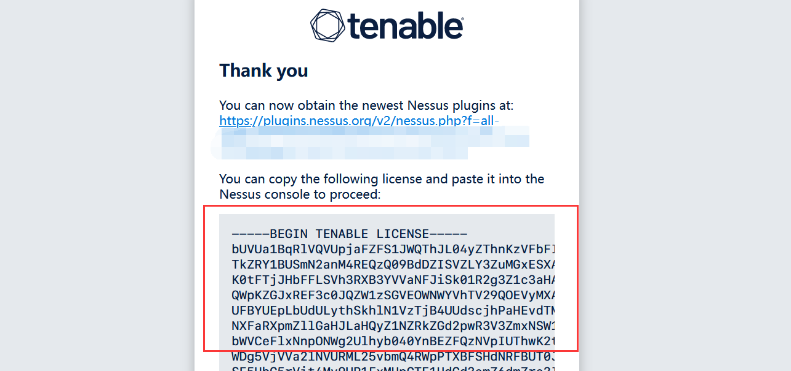
之后就是输入账号和密码，与之前相同，初始化结束之后直接转到 安装插件与证书 这一部分，并且不用再安装证书了。安装完成后界面如下：
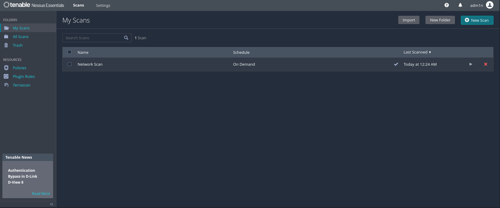
破解
破解的主要目的是：在 Managed Scanner 模式中实现实时查看扫描结果、在线查看报告；在 Nessus Essentials 模式中实现无限制 IP、无限制时间、插件解锁。
如果设置了 nessusd 服务开机自启动，请取消：
1 | systemctl disable nessusd.service # 取消开机自启动 |
设置取消自动更新：
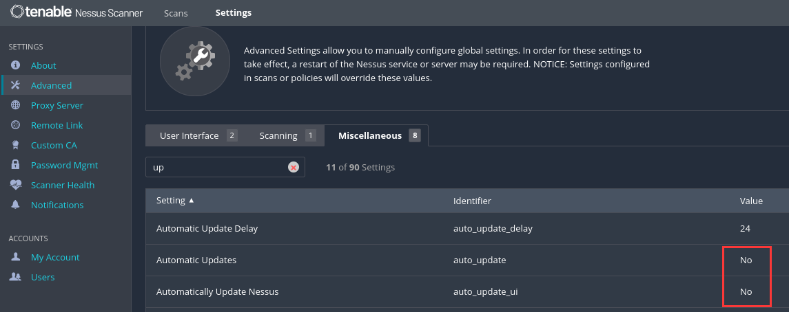
在“Settings”→“About”中查看“Policy Template Version”版本：
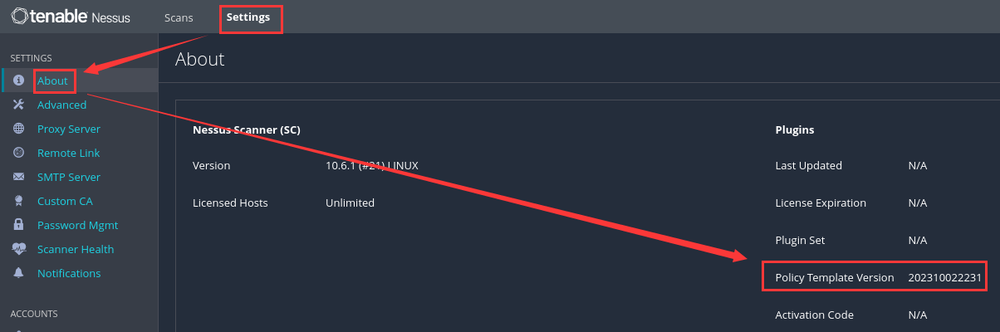
修改 /opt/nessus/var/nessus/plugin_feed_info.inc：
1 | vim /opt/nessus/var/nessus/plugin_feed_info.inc |
修改为如下内容：
1 | PLUGIN_SET = 202310022231; |
删除 /opt/nessus/lib/nessus/plugins 目录下的 plugin_feed_info.inc 文件：
1 | rm /opt/nessus/lib/nessus/plugins/plugin_feed_info.inc |
再次更新插件：
1 | /opt/nessus/sbin/nessuscli update all-2.0.tar.gz |
再重新启动服务，即可破解成功。
注意，这样做之后最大的问题就是，每次启动服务之后，还需要再初始化和编译插件。
脚本如下：
1 | !/bin/bash |
其他问题
配置 nessusd 服务开机自启动：
1 | systemctl enable nessusd.service |
启动脚本：
将网址收藏到火狐的收藏夹，从收藏夹中将网址拖到桌面，可以创建快捷方式：
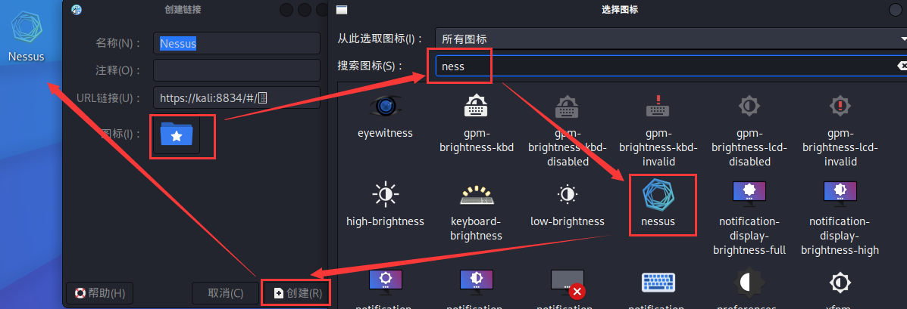
卸载
清除权限：
1 | chattr -R -i /opt/nessus/lib/nessus/plugins |
停止服务：
1 | /bin/systemctl stop nessusd.service |
卸载：
1 | dpkg -r Nessus |
清理剩余文件：
1 | sudo apt autoremove --purge -y nessus |
可以编写成脚本，参见 Nessus 10.5.3 漏洞扫描器的下载安装与卸载，这里便不再赘述。
参考资料
- 【THM】Nessus(Nessus漏洞扫描器介绍)-学习：Nessus Essentials 模式；在线安装插件，注意如果空间不足可能会导致虚拟机无法启动。
- Web漏洞扫描篇-Nessus使用
- kali安装Nessus
- kali安装nesssus破解版，实现无限制IP扫描：未测试，不知能否成功。
- Nessus 10.5.3 漏洞扫描器的下载安装与卸载：提供下载破解版脚本和卸载脚本，不过在作者个人的虚拟机中尝试时，每次开机之后再启动 Nessus，都要重新花很长的时间来初始化和编译插件，不知道哪里出了问题。
- kali中安装nessus：破解参考的是这一篇
- Nessus无法查看本地扫描结果（漏洞扫描工具Nessus常见问题）kali版本
- Nessus 更新插件脚本(适用于windows\Linux)
- nessus 故障处理：卡在初始化和编译插件咋办？我也不到啊
- nessus 启动后 Compiling plugins…卡在这里故障处理
彩蛋
- 彩蛋图片：
- 作者：カンパ twi@campagne_9，pid：2520952
- 来源：pixiv ID: 102276803